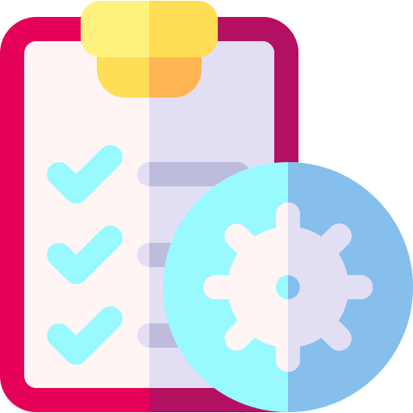

<ion-header class="ion-no-border">
</ion-header>
 <ion-content no-padding no-margin>
  <!-- <ion-card class="div-centered" > -->
    <ion-list>
      <ion-item *ngFor="let chapter of chapters;let i=index;" (click)="openChapterPage(chapter)">
        <!-- <ion-thumbnail  (click)="openChapterPage(chapter)">
          
        </ion-thumbnail> -->
        <ion-label (click)="openChapterPage(chapter)" style="padding-left: 5px;">
          <ion-icon name="book-outline"></ion-icon>
          {{chapter.name | uppercase}}
          <br />
          <ion-icon name="information-outline"></ion-icon>
          <a> Chapter {{ i+1 }}</a>
        </ion-label>
      </ion-item>
    </ion-list>

  <!-- </ion-card> -->

</ion-content>
